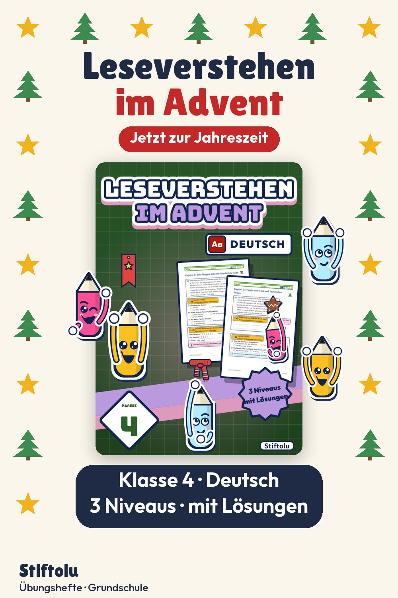
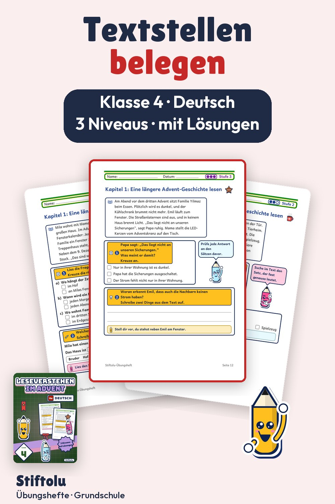

Werbung · Übungsheft von Stiftolu
Längere Adventsgeschichten lesen und verstehen in Klasse 4


Wer genau liest, kann belegen: Das üben Kinder, indem sie Textstellen abschreiben und Ereignisse in die richtige Reihenfolge bringen. Die Geschichten sind länger und in zwei Teile gegliedert. Zu Hause oder in der Schule einsetzbar, 46 Seiten mit Lösungen, erhältlich auf eduki.